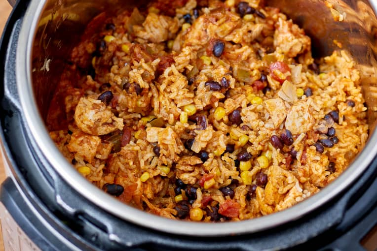

Chicken Burrito Bowl

Chicken Burrito Bowl Made in the Instant Pot
Looking for an quick and easy weeknight meal that feeds the whole family? Look no further than this delicious
Chicken
Burrito Bowl that can be made in your Instant Pot! Made with fresh chicken, rice, beans, corn, salsa, and extra
green chiles, this is a dinner guaranteed to satisfy.
Ingredients
- 1/2 tablespoons canola or vegetable oil
- 1 medium yellow onion, diced
- 2 cloves garlic, minced
- 1 tablespoon chili powder
- 1/2 teaspoons ground cumin
- 1 cup low-sodium chicken broth, divided
- 1 1/2 pounds boneless, skinless chicken thighs, cut into 1-inch pieces
- Kosher salt
- Freshly ground black pepper
- 1 (15-ounce) can black beans, drained and rinsed
- 1 cup frozen corn kernels
- 1 (16-ounce) jar salsa
- 1 cup long-grain white rice
- 1/2 cup shredded sharp cheddar cheese
- 1/5 cup coarsely chopped fresh cilantro (optional)
Steps
- Add the oil to the Instant Pot, turn on sauté setting, and heat until shimmering. Add the onion and garlic
and cook, stirring occasionally, until softened, about 4 minutes. Stir in the chili powder and cumin and
cook until fragrant, about 30 seconds. Add 1/4 cup of the chicken broth and cook, gently scraping the bottom
of the pot with a wooden spoon to loosen any stuck-on bits, and simmer for 1 minute.
- Season the chicken all over with the salt and pepper. Add the chicken, beans, corn, salsa, and stir to
combine. Sprinkle the rice over the top. Pour the remaining 3/4 cup broth over the rice, but do not stir.
Using the manual setting, set the pressure to HIGH for 10 minutes. Close and lock the lid. It should take
the pressure cooker about 10 to 12 minutes to come to pressure and begin the 10 minute countdown. When the
cooking time is complete, do a quick release of the pressure.
- Gently stir everything together. Divide between bowls and top with the cheese and cilantro.